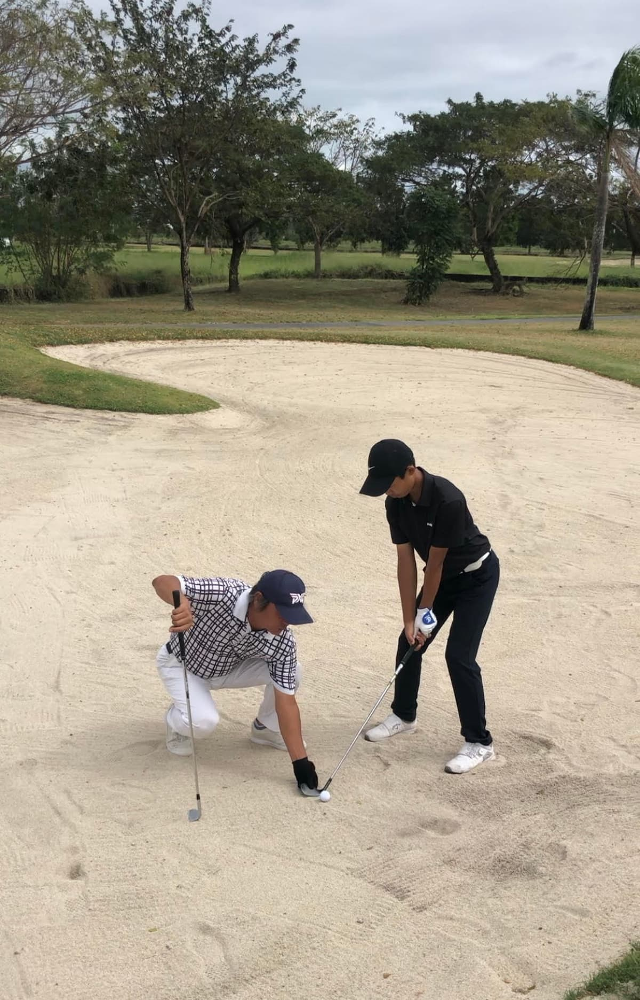

클락에서 25년 넘게 골프를 가르치면서 정말 많은 곳을 거쳐왔지만, 그중에서도 클락 공군기지 안에 있는 골프장 - 지금은 Air Force City Golf Club으로 이름이 바뀌었지만 예전엔 맥켄리 C.C로 불리던 그곳 - 은 나에게 고향 같은 곳이다. 살다시피 했다. 이 글은 그곳에서 만났던 한 아이, S군의 이야기다.
나는 2013년부터 앙헬레스시 도로변에 땅 1헥타르를 임대해서 우리나라 골프연습장처럼 만들어 운영했다. 그럴듯한 시설은 아니었다. 태풍이 불 때마다 그물 기둥이 또 자빠질까 봐 가슴 졸이며 지내던 시절이었다.
그러던 어느 날, 아버지가 중학교 2학년짜리 아들과 함께 입소했다. 아버지는 이름만 대면 알 만한 전직 프로야구 포수 출신이었다. 본인이 직접 가르쳤다는데, 아들의 스윙에서 제법 임팩트가 돋보였다. 아버지가 부탁한 건 하나였다. "6주간 아이를 맡길 테니, 싹수가 있는지 없는지 검토해 주십시오."
그 골프장 - 지금의 에어포스시티, 예전의 맥켄리 C.C - 이 바로 옆에 있었고, 나는 매일 S군을 그곳으로 끌고 다녔다. 필드에서 스윙을 고치고, 벙커에서 살다시피 하게 만들었다.
당시 나는 베버리 골프장의 연습장 프로로 있었다. 마음만 먹으면 얼마든지 더 좋은 조건의 연습장과 골프장에서 훈련시킬 수 있었다. 하지만 에어포스시티는 가깝고, 걸어서 다닐 수 있고, 경비 부담도 없었다. 훈련하기에 딱 좋은 퍼블릭 골프장이었다.
처음에는 이곳에서 아버지가 아들을 가르쳤다. 6주가 지나고 아버지가 다시 들어왔다. 함께 라운드를 했다. 그런데 더 이상 아들을 이길 방법이 없었다. 벙커에서 헤매는 아버지를, 이번엔 아들이 가르치고 있었다.
그날 라운드가 끝나고 나는 아버지에게 강하게 말했다. "이 아이는 다른 아이들보다 늦게 시작했습니다. 하지만 천부적인 볼 컨트롤 능력이 있고, 지구력과 승부 근성이 있습니다. 질책받는 날이면 연습장 불 켜고 새벽까지 훈련합니다. 창원에 데려가면 반드시 투어 프로에게 맡기십시오. 그러면 좋은 결실을 맺을 겁니다."
아버지는 약속대로 했다. 6개월쯤 지났을까, 부산에서 열린 전국체전에서 S군의 그룹이 우승했다. 창원 지역 또래 아이들을 이미 제쳤고, 부산에서도 대등하게 겨루고 있다는 소식이었다.
2년이 지났을 때 전화가 걸려왔다. S군이 미국에서 유학을 하고 있다고 했다. 그런데 다시 학교 문제 때문에 한국으로 들어왔다는 것이었다.
나는 이미 그럴 줄 알고 있었다. 주니어들이 미국으로 골프 유학을 떠났다가 실패하고 돌아오는 걸 그동안 숱하게 지켜봐 왔기 때문이다. 나는 애초에 이렇게 말했었다. "한국에서 고등학교를 졸업하고, 필리핀에서 수련을 한 다음, 태국으로 싱가포르로 넘어가서 아시안 투어를 목표로 삼으십시오." 아버지의 욕심이 이 순서를 건너뛰게 만든 것이었다.
그리고 이건 학적 제도만의 문제가 아니었다. 나는 이미 예언했었다. S군은 공부와는 거리가 멀다. 내가 영어를 가르쳐 봐서 안다. 말은 빨리 배우지만, 글을 읽고 쓰는 건 다른 문제다. 그래서 어차피 중·고등학교는 졸업해야 하니, 한국의 골프 특기생을 육성하는 학교를 마칠 때까지는 움직이지 말라고 했었다. 한국 중·고 연맹에 가입되어 있지 않으면 나중에 주니어 대회를 뛸 자격 자체가 없기 때문이다.
결국 아버지는 방송통신고등학교에 아들을 입학시켰다. 학적을 유지하면서 골프 훈련에 집중할 수 있는 현실적인 선택이었다. 하지만 미국에서 이미 2년이라는 시간과 돈을 까먹고, 졸업도 못 하고, 어머니와는 기러기 신세가 된 뒤였다.
다행스럽게도 S군은 2024년 태국 프로 투어 진입을 위한 퀄리파잉, 이른바 Q스쿨에서 좋은 성적을 냈다. 정말 천운이었다. 이것이 계기가 되어 지금은 태국 치앙마이의 국제학교에서 훈련을 이어가고 있다.
S군은 지금도 훈련 중이다. 미국에서의 2년은 분명 뼈아픈 실패였지만, 그 실패를 겪고도 다시 일어설 수 있었던 건 근본적으로 그 아이가 가진 근성 때문이라고 나는 믿는다. 새벽까지 불 켜고 훈련하던 중학교 2학년 그 아이의 본질은 변하지 않았다.
이것이 나의 에어포스시티 골프장에 얽힌 이야기 중 아주 작은 한 조각이다. 그 골프장에서 나는 정말 많은 아이들을 가르쳤다. 그리고 지금도 클락에서, 한국의 부모들과 아이들을 만난다. 그때마다 나는 S군을 떠올린다.